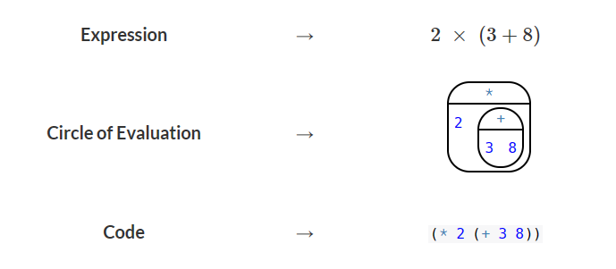
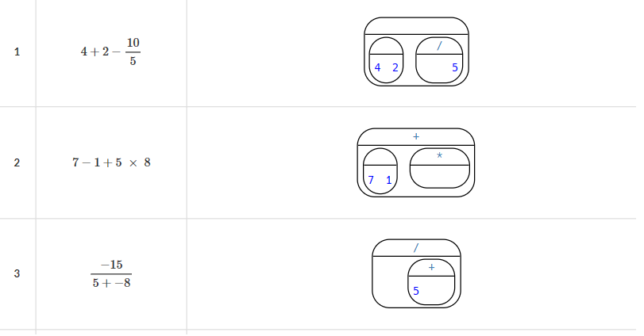

7В класс
Полезные ссылки
- Редактор WeScheme: wescheme.org
Слайды
Занятия
6 декабря 2023, среда
Заканчиваем с флагами.
24 ноября 2023, пятница
Разбор первых двух задач, самостоятельное решение третьей (Ирландия, …).
22 ноября 2023, среда
Решение задач на оценку (решения имейлом).
17 ноября 2023, пятница
Создание флагов. Оценка координат; флаг Японии.
15 ноября 2023, среда
Создание флагов.
30 октября 2023, понедельник
23 октября 2023, понедельник
Определение значений
18 октября 2023, среда
16 октября 2023, понедельник
11 октября 2023, среда
9 октября 2023, понедельник
4 октября 2023, среда
2 октября 2023, понедельник
27 сентября 2023, среда
25 сентября 2023, понедельник
20 сентября 2023, среда
13 сентября 2023, среда
Примеры функций для создания изображений:
(circle 100 "solid" "green")(rectangle 200 100 "solid" "pink")(square 100 "solid" "red")(star 100 "outline" "black")
Примеры функций для изменения/комбинирования изображений (IMG1 и
IMG2 это какие-то изображения, например, (star 50 "solid" "blue")
и (square 20 "outline" "yellow"; N — какое-то число):
(above IMG1 IMG2)(beside IMG1 IMG2)(overlay IMG1 IMG2)(rotate N IMG1)
Задачи.
- Напишите программу, рисующую флаг
- Армении
- Мадагаскара
- Буркина Фасо
- Чешской Республики
11 сентября 2023, понедельник
- Правила построения Кругов Вычислений:
- Каждый круг содержит одну — и только одну! — операцию;
- В середину круга вписываются числа (или другие объекты, о которых узнаем позже) слева направо;
- Круги могут содержать другие круги.
- Правила написания кода для арифметического выражения. Выражение
\(3 + 7\) мы записываем в программе как
(+ 3 7).- Выражение всегда начинается и заканчивается круглой скобкой (открывающей и закрывающей соответственно).
- Сразу после открывающей скобки пишется имя операции. Это может
быть значок, слово или набор слов:
+,/,sqr,string-length. Между открывающей скобкой и именем пробел не ставится! - После имени ставится пробел и далее через пробел слева направо перечисляются аргументы — числа, к которым мы применяем операцию.
- После последнего аргумента ставится закрывающая скобка. Между ними пробел также не ставится.
- Среда разработки: https://wescheme.org
Пример:

Для тренировки (заполните круги до конца и напишите код, который также можно проверить на WeScheme):

6 сентября 2023, среда
- Картинка 1: .png
- Картинка 2: .png
- Ninja Cat Desmos Graph
- Описание, скетч
- Template
{kind=link}
{kind=link}
4 сентября 2023, понедельник
Игра Ninja Cat: https://www.wescheme.org/run?publicId=sggzRzgU5T